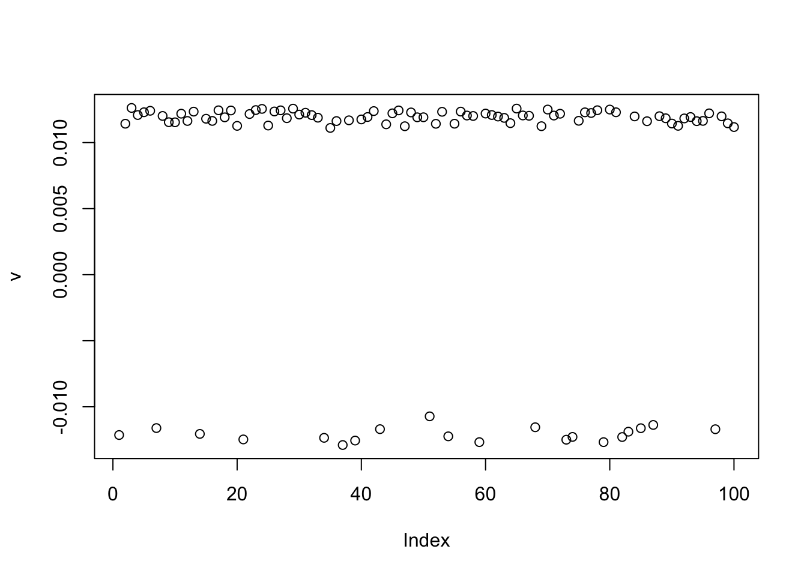
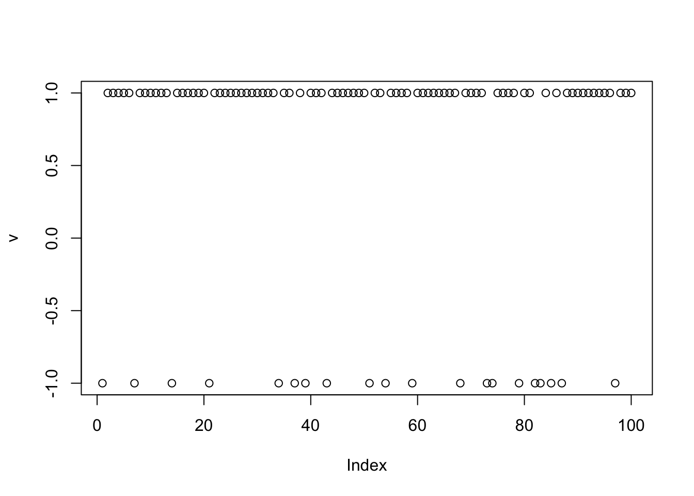
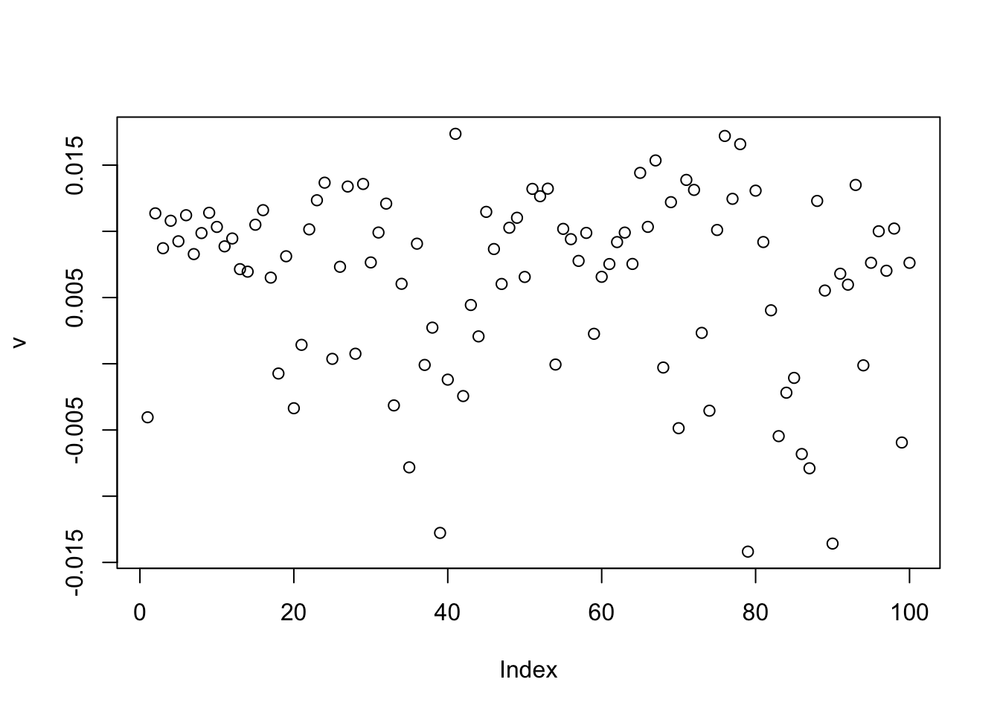
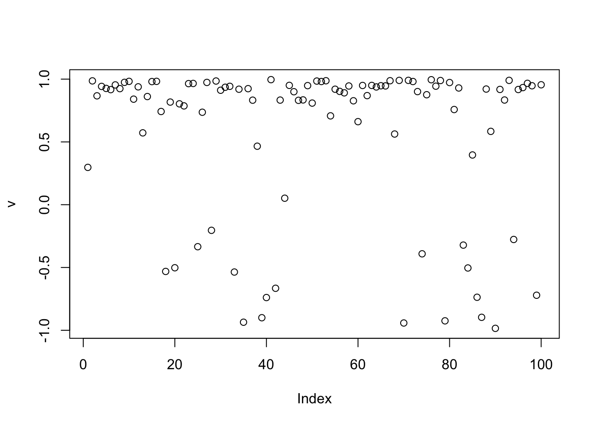
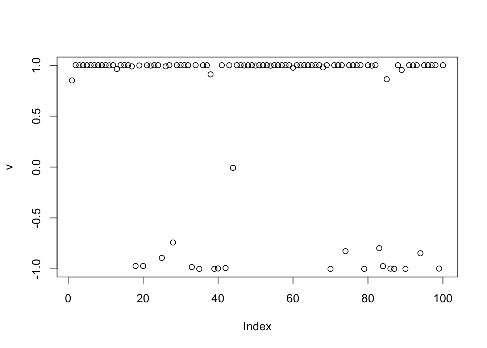
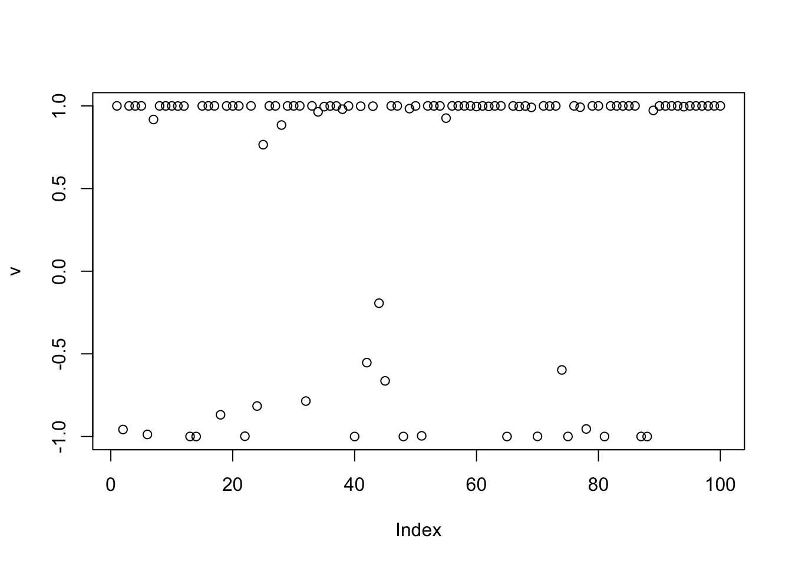
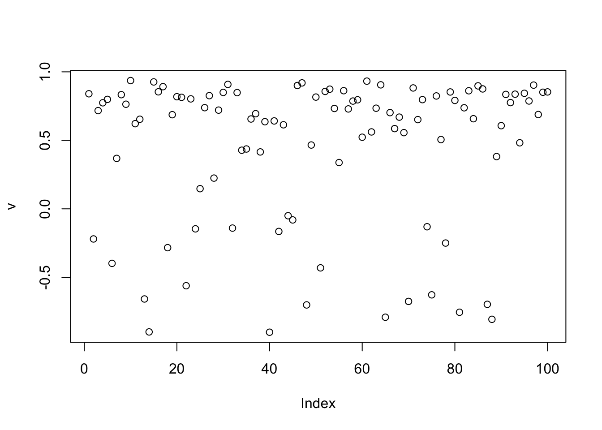
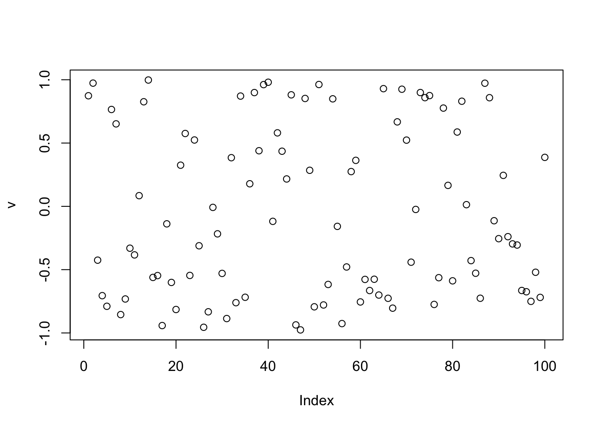
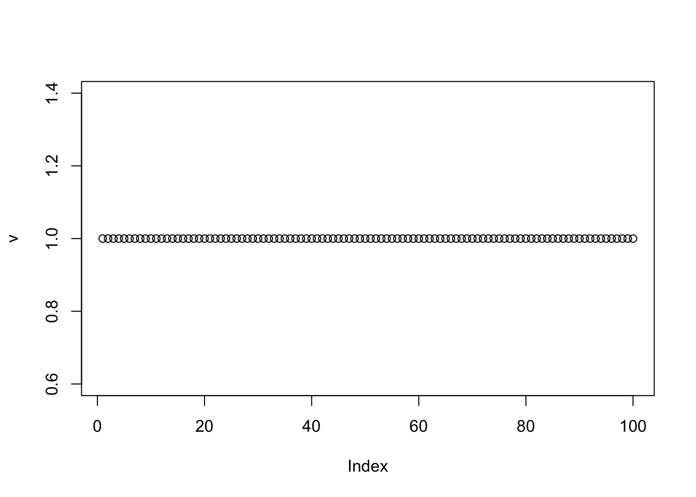

Last updated: 2026-06-22
Checks: 7 0
Knit directory: misc/analysis/
This reproducible R Markdown analysis was created with workflowr (version 1.7.2). The Checks tab describes the reproducibility checks that were applied when the results were created. The Past versions tab lists the development history.
Great! Since the R Markdown file has been committed to the Git repository, you know the exact version of the code that produced these results.
Great job! The global environment was empty. Objects defined in the global environment can affect the analysis in your R Markdown file in unknown ways. For reproduciblity it’s best to always run the code in an empty environment.
The command set.seed(1) was run prior to running the
code in the R Markdown file. Setting a seed ensures that any results
that rely on randomness, e.g. subsampling or permutations, are
reproducible.
Great job! Recording the operating system, R version, and package versions is critical for reproducibility.
Nice! There were no cached chunks for this analysis, so you can be confident that you successfully produced the results during this run.
Great job! Using relative paths to the files within your workflowr project makes it easier to run your code on other machines.
Great! You are using Git for version control. Tracking code development and connecting the code version to the results is critical for reproducibility.
The results in this page were generated with repository version aee6a54. See the Past versions tab to see a history of the changes made to the R Markdown and HTML files.
Note that you need to be careful to ensure that all relevant files for
the analysis have been committed to Git prior to generating the results
(you can use wflow_publish or
wflow_git_commit). workflowr only checks the R Markdown
file, but you know if there are other scripts or data files that it
depends on. Below is the status of the Git repository when the results
were generated:
Ignored files:
Ignored: .DS_Store
Ignored: .Rhistory
Ignored: .Rproj.user/
Ignored: GSE87571/
Ignored: analysis/.RData
Ignored: analysis/.Rhistory
Ignored: analysis/ALStruct_cache/
Ignored: data/.Rhistory
Ignored: data/methylation-data-for-matthew.rds
Ignored: data/pbmc/
Ignored: data/pbmc_purified.RData
Untracked files:
Untracked: .dropbox
Untracked: GSE41037/
Untracked: Icon
Untracked: analysis/GHstan.Rmd
Untracked: analysis/GTEX-cogaps.Rmd
Untracked: analysis/PACS.Rmd
Untracked: analysis/Rplot.png
Untracked: analysis/SPCAvRP.rmd
Untracked: analysis/abf_comparisons.Rmd
Untracked: analysis/admm_02.Rmd
Untracked: analysis/admm_03.Rmd
Untracked: analysis/bispca.Rmd
Untracked: analysis/cache/
Untracked: analysis/cholesky.Rmd
Untracked: analysis/compare-transformed-models.Rmd
Untracked: analysis/cormotif.Rmd
Untracked: analysis/cp_ash.Rmd
Untracked: analysis/eQTL.perm.rand.pdf
Untracked: analysis/eb_power2.Rmd
Untracked: analysis/eb_prepilot.Rmd
Untracked: analysis/eb_var.Rmd
Untracked: analysis/ebpmf1.Rmd
Untracked: analysis/ebpmf_sla_text.Rmd
Untracked: analysis/ebspca_sims.Rmd
Untracked: analysis/explore_psvd.Rmd
Untracked: analysis/fa_check_identify.Rmd
Untracked: analysis/fa_iterative.Rmd
Untracked: analysis/fastica_heated.Rmd
Untracked: analysis/flash_cov_overlapping_groups_init.Rmd
Untracked: analysis/flash_test_tree.Rmd
Untracked: analysis/flashier_newgroups.Rmd
Untracked: analysis/flashier_nmf_triples.Rmd
Untracked: analysis/flashier_pbmc.Rmd
Untracked: analysis/flashier_snn_shifted_prior.Rmd
Untracked: analysis/greedy_ebpmf_exploration_00.Rmd
Untracked: analysis/ieQTL.perm.rand.pdf
Untracked: analysis/lasso_em_03.Rmd
Untracked: analysis/m6amash.Rmd
Untracked: analysis/mash_bhat_z.Rmd
Untracked: analysis/mash_ieqtl_permutations.Rmd
Untracked: analysis/matrix_beta.Rmd
Untracked: analysis/meth_flash_01.Rmd
Untracked: analysis/methylation_example.Rmd
Untracked: analysis/mixsqp.Rmd
Untracked: analysis/mr.ash_lasso_init.Rmd
Untracked: analysis/mr.mash.test.Rmd
Untracked: analysis/mr_ash_modular.Rmd
Untracked: analysis/mr_ash_parameterization.Rmd
Untracked: analysis/mr_ash_ridge.Rmd
Untracked: analysis/mv_gaussian_message_passing.Rmd
Untracked: analysis/nejm.Rmd
Untracked: analysis/nmf_bg.Rmd
Untracked: analysis/nonneg_underapprox.Rmd
Untracked: analysis/normal_conditional_on_r2.Rmd
Untracked: analysis/normalize.Rmd
Untracked: analysis/pbmc.Rmd
Untracked: analysis/pca_binary_weighted.Rmd
Untracked: analysis/pca_l1.Rmd
Untracked: analysis/poisson_nmf_approx.Rmd
Untracked: analysis/poisson_shrink.Rmd
Untracked: analysis/poisson_transform.Rmd
Untracked: analysis/qrnotes.txt
Untracked: analysis/ridge_iterative_02.Rmd
Untracked: analysis/ridge_iterative_splitting.Rmd
Untracked: analysis/samps/
Untracked: analysis/sc_bimodal.Rmd
Untracked: analysis/shrinkage_comparisons_changepoints.Rmd
Untracked: analysis/susie_cov.Rmd
Untracked: analysis/susie_en.Rmd
Untracked: analysis/susie_z_investigate.Rmd
Untracked: analysis/svd-timing.Rmd
Untracked: analysis/temp.RDS
Untracked: analysis/temp.Rmd
Untracked: analysis/test-figure/
Untracked: analysis/test.Rmd
Untracked: analysis/test.Rpres
Untracked: analysis/test.md
Untracked: analysis/test_qr.R
Untracked: analysis/test_sparse.Rmd
Untracked: analysis/tree_dist_top_eigenvector.Rmd
Untracked: analysis/z.txt
Untracked: code/coordinate_descent_symNMF.R
Untracked: code/multivariate_testfuncs.R
Untracked: code/rqb.hacked.R
Untracked: data/4matthew/
Untracked: data/4matthew2/
Untracked: data/E-MTAB-2805.processed.1/
Untracked: data/ENSG00000156738.Sim_Y2.RDS
Untracked: data/GDS5363_full.soft.gz
Untracked: data/GSE41265_allGenesTPM.txt
Untracked: data/Muscle_Skeletal.ACTN3.pm1Mb.RDS
Untracked: data/P.rds
Untracked: data/Thyroid.FMO2.pm1Mb.RDS
Untracked: data/bmass.HaemgenRBC2016.MAF01.Vs2.MergedDataSources.200kRanSubset.ChrBPMAFMarkerZScores.vs1.txt.gz
Untracked: data/bmass.HaemgenRBC2016.Vs2.NewSNPs.ZScores.hclust.vs1.txt
Untracked: data/bmass.HaemgenRBC2016.Vs2.PreviousSNPs.ZScores.hclust.vs1.txt
Untracked: data/eb_prepilot/
Untracked: data/finemap_data/fmo2.sim/b.txt
Untracked: data/finemap_data/fmo2.sim/dap_out.txt
Untracked: data/finemap_data/fmo2.sim/dap_out2.txt
Untracked: data/finemap_data/fmo2.sim/dap_out2_snp.txt
Untracked: data/finemap_data/fmo2.sim/dap_out_snp.txt
Untracked: data/finemap_data/fmo2.sim/data
Untracked: data/finemap_data/fmo2.sim/fmo2.sim.config
Untracked: data/finemap_data/fmo2.sim/fmo2.sim.k
Untracked: data/finemap_data/fmo2.sim/fmo2.sim.k4.config
Untracked: data/finemap_data/fmo2.sim/fmo2.sim.k4.snp
Untracked: data/finemap_data/fmo2.sim/fmo2.sim.ld
Untracked: data/finemap_data/fmo2.sim/fmo2.sim.snp
Untracked: data/finemap_data/fmo2.sim/fmo2.sim.z
Untracked: data/finemap_data/fmo2.sim/pos.txt
Untracked: data/logm.csv
Untracked: data/m.cd.RDS
Untracked: data/m.cdu.old.RDS
Untracked: data/m.new.cd.RDS
Untracked: data/m.old.cd.RDS
Untracked: data/mainbib.bib.old
Untracked: data/mat.csv
Untracked: data/mat.txt
Untracked: data/mat_new.csv
Untracked: data/matrix_lik.rds
Untracked: data/paintor_data/
Untracked: data/running_data_chris.csv
Untracked: data/running_data_matthew.csv
Untracked: data/temp.txt
Untracked: data/y.txt
Untracked: data/y_f.txt
Untracked: data/zscore_jointLCLs_m6AQTLs_susie_eQTLpruned.rds
Untracked: data/zscore_jointLCLs_random.rds
Untracked: explore_udi.R
Untracked: output/fit.k10.rds
Untracked: output/fit.nn.pbmc.purified.rds
Untracked: output/fit.nn.rds
Untracked: output/fit.nn.s.001.rds
Untracked: output/fit.nn.s.01.rds
Untracked: output/fit.nn.s.1.rds
Untracked: output/fit.nn.s.10.rds
Untracked: output/fit.snn.s.001.rds
Untracked: output/fit.snn.s.01.nninit.rds
Untracked: output/fit.snn.s.01.rds
Untracked: output/fit.varbvs.RDS
Untracked: output/fit2.nn.pbmc.purified.rds
Untracked: output/glmnet.fit.RDS
Untracked: output/snn07.txt
Untracked: output/snn34.txt
Untracked: output/test.bv.txt
Untracked: output/test.gamma.txt
Untracked: output/test.hyp.txt
Untracked: output/test.log.txt
Untracked: output/test.param.txt
Untracked: output/test2.bv.txt
Untracked: output/test2.gamma.txt
Untracked: output/test2.hyp.txt
Untracked: output/test2.log.txt
Untracked: output/test2.param.txt
Untracked: output/test3.bv.txt
Untracked: output/test3.gamma.txt
Untracked: output/test3.hyp.txt
Untracked: output/test3.log.txt
Untracked: output/test3.param.txt
Untracked: output/test4.bv.txt
Untracked: output/test4.gamma.txt
Untracked: output/test4.hyp.txt
Untracked: output/test4.log.txt
Untracked: output/test4.param.txt
Untracked: output/test5.bv.txt
Untracked: output/test5.gamma.txt
Untracked: output/test5.hyp.txt
Untracked: output/test5.log.txt
Untracked: output/test5.param.txt
Unstaged changes:
Modified: .gitignore
Modified: analysis/eb_snmu.Rmd
Modified: analysis/ebnm_binormal.Rmd
Modified: analysis/ebpower.Rmd
Modified: analysis/flashier_log1p.Rmd
Modified: analysis/flashier_sla_text.Rmd
Modified: analysis/logistic_z_scores.Rmd
Modified: analysis/mr_ash_pen.Rmd
Modified: analysis/nmu_em.Rmd
Modified: analysis/susie_flash.Rmd
Modified: analysis/tap_free_energy.Rmd
Modified: misc.Rproj
Note that any generated files, e.g. HTML, png, CSS, etc., are not included in this status report because it is ok for generated content to have uncommitted changes.
These are the previous versions of the repository in which changes were
made to the R Markdown (analysis/EB_subspace.Rmd) and HTML
(docs/EB_subspace.html) files. If you’ve configured a
remote Git repository (see ?wflow_git_remote), click on the
hyperlinks in the table below to view the files as they were in that
past version.
| File | Version | Author | Date | Message |
|---|---|---|---|---|
| Rmd | aee6a54 | Matthew Stephens | 2026-06-22 | workflowr::wflow_publish("EB_subspace.Rmd") |
| html | d112e19 | Matthew Stephens | 2026-06-21 | Build site. |
| Rmd | 4b69522 | Matthew Stephens | 2026-06-21 | workflowr::wflow_publish("EB_subspace.Rmd") |
I want to look at simple EB/variational/Bayesian approach to estimating a binary vector that lives approximately in a given subspace. You are given an \(nxn\), rank \(k\), projection matrix P and you want to find a vector \(v\) such that \(\rho(v) :=v'Pv/v'v\) is large. If \(v\) lies entirely in the subspace defined by \(P\) then \(\rho(v) = v'v/v'v = 1\).
My derivations here suggest using a log-likelihood \(l(v) \approx -(n-k-2b/2)\log(1-\rho(v))\), where \(b\) is a hyperparameter. For now we make the approximation that \(k,b\) are small so \(l(v) \approx -n/2 \log(1-\rho(v))\). We also make the approximation \(E_q(l(v)) = -(n/2) \log(1-\rho(q))\) where \(\rho(q) = \bar{v}'P\bar{v}/<v'v>\). Here \(\bar{v},<v'v>\) denote the expectations of \(v,v'v\) under \(q\).
The variational EB approach then iterates: \[q \leftarrow EBNM\left( \frac{\mathbf{P}\bar{v}}{\rho(q)}, \frac{(1-\rho(q)) <v^Tv>}{n\rho(q)} \right)\]
For the Rademacher prior we have \(<v'v>=n\) and the update can be written entirely in terms of the posterior mean: \[\bar{v} = tanh(P\bar{v}/(1-\rho))\] While the idea is to use \(\rho=v'Pv/n\), I will also try fixing \(\rho\) in these updates to see what happens. Note that this approach is not really EB because the prior is fixed Rademacher. TODO: we should try estimating a generalized (asymmetric) Rademacher prior, so this becomes a genuinely EB approach.
Here I simulate 3 groups, with 20 members each.
K=3
p = 1000
n = 100
set.seed(1)
L = matrix(-1,nrow=n,ncol=K)
for(i in 1:K){L[sample(1:n,20),i]=1}
FF = matrix(rnorm(p*K), nrow = p, ncol=K)
X = L %*% t(FF) + rnorm(n*p,0,1)The column space of \(X\) approximately contains three binary vectors (columns of \(L\)). Here I find the projection matrix corresponding to the column space of \(X\) (approximated using a rank 3 matrix, which helps remove the noise.) We can see the values of rho for the true L are very high.
U = svd(X)$u[,1:3]
P = U %*% t(U)
true_rho = diag(t(L) %*% P %*% L/n)
true_rho[1] 0.9989868 0.9989723 0.9989671Now, initializing from a random vector. If we set rho=0 then the iterates converge to something close to 0 (as expected, because tanh is a contraction). However, interestingly it does find a binary source!
set.seed(1)
v.init = sample(c(-1,1),n,replace=TRUE)
maxiter = 10000
rho = 0
v = v.init
for(i in 1:maxiter){
v = tanh(P %*% v/(1-rho))
}
t(v) %*% P %*% v/n # print out rho [,1]
[1,] 0.0001436779plot(v)
| Version | Author | Date |
|---|---|---|
| d112e19 | Matthew Stephens | 2026-06-21 |
cor(v,L) [,1] [,2] [,3]
[1,] -0.9990229 -0.01279823 0.07729109Try instead setting rho=0.5. It converges to a binary source again, but this time close to v in (-1,1).
rho = 0.5
v = v.init
for(i in 1:maxiter){
v = tanh(P %*% v/(1-rho))
}
t(v) %*% P %*% v/n # print out rho [,1]
[1,] 0.9152038plot(v)
| Version | Author | Date |
|---|---|---|
| d112e19 | Matthew Stephens | 2026-06-21 |
cor(v,L) [,1] [,2] [,3]
[1,] -0.9999768 -0.0002258368 0.06234581This time we estimate rho. It converges to a binary source again, but this time close to v in (-1,1).
rho = 0
v = v.init
for(i in 1:maxiter){
rho = as.numeric(t(v) %*% P %*% v/n) # update rho
v = tanh(P %*% v/(1-rho))
}
t(v) %*% P %*% v/n # print out rho [,1]
[1,] 0.9989868plot(v)
| Version | Author | Date |
|---|---|---|
| d112e19 | Matthew Stephens | 2026-06-21 |
cor(v,L) [,1] [,2] [,3]
[1,] -1 -5.724587e-17 0.0625Here I repeat the above, with more noise:
K=3
p = 1000
n = 100
set.seed(1)
L = matrix(-1,nrow=n,ncol=K)
for(i in 1:K){L[sample(1:n,20),i]=1}
FF = matrix(rnorm(p*K), nrow = p, ncol=K)
X = L %*% t(FF) + rnorm(n*p,0,10)The column space of \(X\) approximately contains three binary vectors (columns of \(L\)). The true value of rho is near 0.8.
U = svd(X)$u[,1:3]
P = U %*% t(U)
true_rho = diag(t(L) %*% P %*% L/n)
true_rho[1] 0.807348 0.790952 0.829372Now, initializing from a random vector. If we set rho=0 then the iterates converge to something close to 0 (as expected, because tanh is a contraction). This time it does not really find a binary source!
set.seed(1)
v.init.1 = sample(c(-1,1),n,replace=TRUE)
maxiter = 10000
rho = 0
v = v.init.1
for(i in 1:maxiter){
v = tanh(P %*% v/(1-rho))
}
t(v) %*% P %*% v/n # print out rho [,1]
[1,] 8.746538e-05plot(v)
| Version | Author | Date |
|---|---|---|
| d112e19 | Matthew Stephens | 2026-06-21 |
cor(v,L) [,1] [,2] [,3]
[1,] -0.428421 -0.7348204 0.09921965Try instead setting rho=0.5. It is getting closer to a binary source.
rho = 0.5
v = v.init.1
for(i in 1:maxiter){
v = tanh(P %*% v/(1-rho))
}
t(v) %*% P %*% v/n # print out rho [,1]
[1,] 0.6826304plot(v)
| Version | Author | Date |
|---|---|---|
| d112e19 | Matthew Stephens | 2026-06-21 |
cor(v,L) [,1] [,2] [,3]
[1,] -0.1350534 -0.8809243 -0.08754405This time we estimate rho. It converges to something closer to a binary source but does not get it exactly right.
rho = 0
v = v.init.1
for(i in 1:maxiter){
rho = as.numeric(t(v) %*% P %*% v/n) # update rho
v = tanh(P %*% v/(1-rho))
}
t(v) %*% P %*% v/n # print out rho [,1]
[1,] 0.8272076plot(v)
| Version | Author | Date |
|---|---|---|
| d112e19 | Matthew Stephens | 2026-06-21 |
cor(v,L) [,1] [,2] [,3]
[1,] -0.07294291 -0.8723976 -0.07514556Try a different random start: it gets closer (and also a larger rho).
set.seed(3)
v.init.3 = sample(c(-1,1),n,replace=TRUE)
rho = 0
v = v.init.3
for(i in 1:maxiter){
rho = as.numeric(t(v) %*% P %*% v/n) # update rho
v = tanh(P %*% v/(1-rho))
}
t(v) %*% P %*% v/n # print out rho [,1]
[1,] 0.8254599plot(v)
| Version | Author | Date |
|---|---|---|
| d112e19 | Matthew Stephens | 2026-06-21 |
cor(v,L) [,1] [,2] [,3]
[1,] 0.02204825 -0.07501538 -0.9648287Try EBICA
set.seed(3)
v.init.3 = sample(c(-1,1),n,replace=TRUE)
rho = 0
v = v.init.3
for(i in 1:maxiter){
v = tanh(n*P %*% v/as.numeric(sqrt(n * t(v) %*% P %*% v)))
}
t(v) %*% P %*% v/n # print out rho [,1]
[1,] 0.487831plot(v)
| Version | Author | Date |
|---|---|---|
| d112e19 | Matthew Stephens | 2026-06-21 |
cor(v,L) [,1] [,2] [,3]
[1,] 0.01389254 -0.1671942 -0.906508In the above I did not center X. So here I do so. This reduces the “true rho” substantially (below 0.5). The issue is that the original binary vectors are no longer in the subspace spanned by columns of Xcenter - the centering shifts the +-1 vectors so they are no longer +-1.
Xcenter = scale(X,scale=FALSE)
Ucenter = svd(Xcenter)$u[,1:3]
Pcenter = Ucenter %*% t(Ucenter)
diag(t(L) %*% Pcenter %*% L/n)[1] 0.4262193 0.3058118 0.4351670The method now fails to find them (not suprisingly):
set.seed(3)
v.init.3 = sample(c(-1,1),n,replace=TRUE)
rho = 0
v = v.init.3
for(i in 1:maxiter){
rho = as.numeric(t(v) %*% Pcenter %*% v/n) # update rho
v = tanh(Pcenter %*% v/(1-rho))
}
t(v) %*% Pcenter %*% v/n # print out rho [,1]
[1,] 0.4034526plot(v)
| Version | Author | Date |
|---|---|---|
| d112e19 | Matthew Stephens | 2026-06-21 |
cor(v,L) [,1] [,2] [,3]
[1,] 0.4690021 0.06030247 0.5967123If we add an intercept we have a problem: the method finds the trivial solution of all 1s. (When I ran this about five times with different seeds it did eventually find one of the sources. But the trivial solution has the largest rho, so it tends to win.)
Ucenter = cbind(rep(1/sqrt(n),n),Ucenter) # add an intercept
Pcenter = Ucenter %*% t(Ucenter)
diag(t(L) %*% Pcenter %*% L/n) #rho is back to 0.8 or so[1] 0.7862193 0.6658118 0.7951670set.seed(3)
v.init.3 = sample(c(-1,1),n,replace=TRUE)
rho = 0
v = v.init.3
v = sample(c(-1,1),n,replace=TRUE)
for(i in 1:maxiter){
rho = as.numeric(t(v) %*% Pcenter %*% v/n) # update rho
v = tanh(Pcenter %*% v/(1-rho))
}
t(v) %*% Pcenter %*% v/n # print out rho [,1]
[1,] 1plot(v)
| Version | Author | Date |
|---|---|---|
| d112e19 | Matthew Stephens | 2026-06-21 |
cor(v,L)Warning in cor(v, L): the standard deviation is zero [,1] [,2] [,3]
[1,] NA NA NA
sessionInfo()R version 4.4.2 (2024-10-31)
Platform: aarch64-apple-darwin20
Running under: macOS Sequoia 15.6.1
Matrix products: default
BLAS: /System/Library/Frameworks/Accelerate.framework/Versions/A/Frameworks/vecLib.framework/Versions/A/libBLAS.dylib
LAPACK: /Library/Frameworks/R.framework/Versions/4.4-arm64/Resources/lib/libRlapack.dylib; LAPACK version 3.12.0
locale:
[1] en_US.UTF-8/en_US.UTF-8/en_US.UTF-8/C/en_US.UTF-8/en_US.UTF-8
time zone: America/Chicago
tzcode source: internal
attached base packages:
[1] stats graphics grDevices utils datasets methods base
loaded via a namespace (and not attached):
[1] vctrs_0.7.2 cli_3.6.5 knitr_1.51 rlang_1.1.7
[5] xfun_0.56 stringi_1.8.7 otel_0.2.0 promises_1.5.0
[9] jsonlite_2.0.0 workflowr_1.7.2 glue_1.8.0 rprojroot_2.1.1
[13] git2r_0.36.2 htmltools_0.5.9 httpuv_1.6.16 sass_0.4.10
[17] rmarkdown_2.30 jquerylib_0.1.4 evaluate_1.0.5 tibble_3.3.1
[21] fastmap_1.2.0 yaml_2.3.12 lifecycle_1.0.5 whisker_0.4.1
[25] stringr_1.6.0 compiler_4.4.2 fs_1.6.6 Rcpp_1.1.1
[29] pkgconfig_2.0.3 rstudioapi_0.18.0 later_1.4.6 digest_0.6.39
[33] R6_2.6.1 pillar_1.11.1 magrittr_2.0.4 bslib_0.10.0
[37] tools_4.4.2 cachem_1.1.0